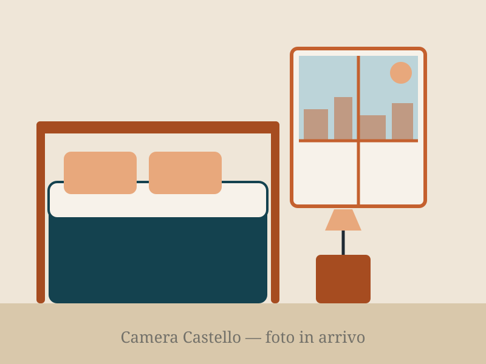

Castello Room
Double · up to 2 guests · private bathroom
Overlooking the rooftops of the old town, with warm western light. Double bed, desk and private bathroom with shower.
- Private bathroom with shower
- Air conditioning and heating
- Fast free Wi-Fi
- Linen and toiletries provided